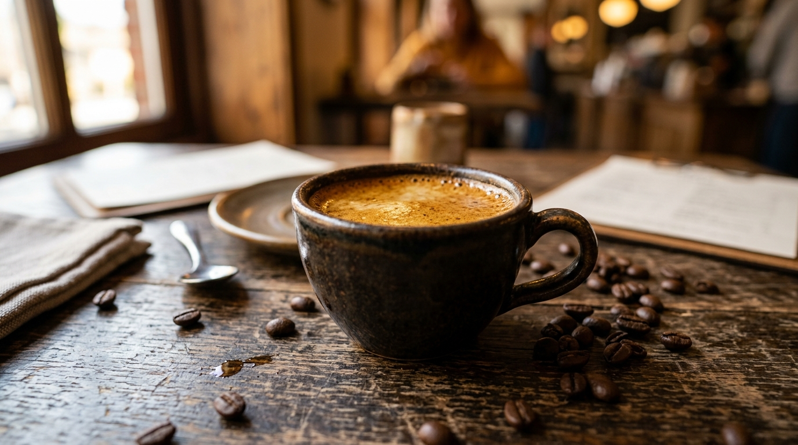

Espresso: The Heart of Coffee Culture & Foundation of Classic Drinks
The Essence of Espresso & Classic Beverages
Espresso is a concentrated coffee beverage produced by forcing near-boiling water under approximately 9 bars of pressure through a finely ground, tamped coffee puck. Its dense syrupy body, multifaceted aromatic bouquet, and signature golden-hazelnut crema combine to create a singular culinary experience. This single foundational shot serves as the cornerstone for beloved cafe staples worldwide — from the velvety microfoam of a cappuccino to a textured flat white or a delicate americano. The nuanced harmony between natural acidity, origin sweetness, and pleasant bitterness transforms a properly extracted espresso shot into genuine craftsmanship.

“Espresso is the quintessence of the coffee bean, where high hydraulic pressure concentrates the entire spectrum of flavor, aroma, and terroir sweetness.”
Chronology of Espresso Development: Key Milestones
- 1901 — Milanese engineer Luigi Bezzera patented an innovative steam-driven espresso machine, inaugurating the era of pressurized coffee extraction.
- 1906 — Entrepreneur Desiderio Pavoni acquired Bezzera's patent and unveiled the first commercial "Ideale" machine at the Milan International Fair, standardizing the term "espresso".
- 1938 — Italian inventor Achille Gaggia engineered a steamless screw-piston mechanism capable of forcing water through ground coffee under high mechanical pressure.
- 1948 — Release of the legendary Gaggia Crema Caffe machine, establishing the thick golden foam ("crema") as the definitive visual hallmark of authentic espresso.
- 1961 — Faema introduced the revolutionary E61 model featuring an electric rotary pump delivering constant 9-bar pressure and a thermosiphon temperature circulation system.
Espresso Facts & Beverage Science
- Golden Extraction Ratio: A standard single espresso shot is extracted from 7–9 grams of freshly ground coffee, yielding 25–30 ml of liquid in 25–30 seconds at a water temperature of 90–96 °C.
- Crema as a Freshness Benchmark: Crema is an emulsion of suspended coffee oils and microbubbles of carbon dioxide gas, reflecting roast freshness and proper bean degassing.
- Rule of Thirds in Cappuccino: The classic Italian cappuccino recipe balances equal thirds — one-third single espresso, one-third steamed milk, and one-third airy, silky microfoam.
- The Australasian Flat White: Developed in Australia and New Zealand, this specialty favorite features a double espresso base integrated with textured milk and a minimal microfoam layer.
- Caffeine Concentration Dynamics: Despite its intense, concentrated sensory profile, an espresso shot contains less total caffeine than an average 250 ml filter coffee due to the brief brew contact time.
Comparative Beverage Specification Matrix
| Beverage | Base (Espresso) | Milk or Water | Texture & Foam Profile | Total Volume |
|---|---|---|---|---|
| Espresso | Single shot (30 ml) | None | Dense golden-hazelnut crema | 30 ml |
| Doppio | Double shot (60 ml) | None | Thick crema of double density | 60 ml |
| Cappuccino | Single shot (30 ml) | Steamed milk (100 ml) | Glossy microfoam 1–1.5 cm thick | 150–180 ml |
| Flat White | Double shot (60 ml) | Steamed milk (100–120 ml) | Velvety microfoam layer (up to 0.5 cm) | 160–180 ml |
| Latte | Single shot (30 ml) | Steamed milk (180–220 ml) | Delicate light foam layer (approx. 0.5–1 cm) | 240–300 ml |
| Americano | Double shot (60 ml) | Hot water at 92 °C (120–150 ml) | Dissipated light crema on the surface | 180–210 ml |
| Thermal Standards | Espresso extraction operates at 90–96 °C; steam-wand milk texturing is heated to an optimal 60–65 °C. | |||
Educational Resources & Video Guide
Video Guide: Professional espresso extraction technique and milk steaming fundamentals
Industry Standards
Learn more about professional coffee grading protocols and world barista competitions on the official website of the Specialty Coffee Association (SCA).